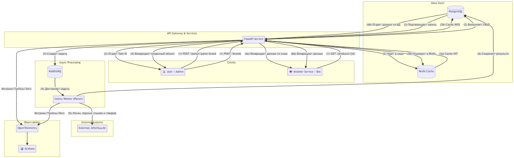
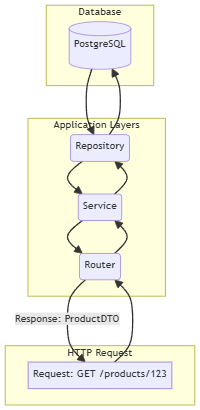
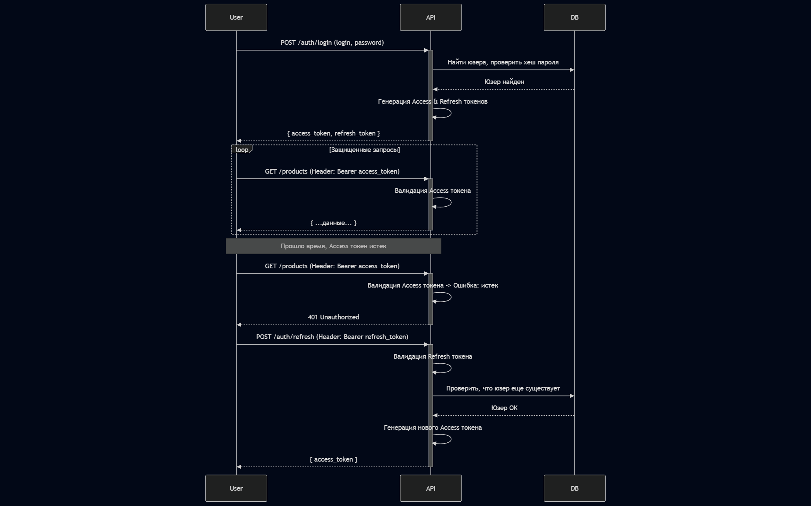

Система автоматизации E-commerce (Afterbuy)
Высокопроизводительная экосистема для парсинга, обработки и управления данными, которая сократила время ручных операций с 1 часа до 5 минут и обрабатывает >100,000 запросов в день.



Кликни на картинку, чтобы увеличить.
Техническое погружение:
Архитектурные решения
- Слойная архитектура: Строгое разделение на `Routers`, `Services` и `Repositories` для изоляции логики и упрощения тестирования.
- Dependency Injection: Активное использование `FastAPI.Depends` для управления зависимостями и сессиями БД, что обеспечивает чистоту кода.
- Lazy-инициализация БД: Кастомный `DatabaseHelper` для `SQLAlchemy`, который создает `engine` только при первом вызове, что критически важно для совместимости с `Celery`.
- Reverse-Engineering: Вместо хрупкого парсинга HTML был использован анализ HTTP-запросов и внутреннее API Afterbuy.
Масштабируемость и Производительность
- Асинхронный пайплайн: `FastAPI` + `AIOHTTP` + `asyncpg` обеспечивают полностью неблокирующий I/O, позволяя обрабатывать сотни одновременных запросов.
- Фоновая обработка: Все долгие задачи (>1 сек) вынесены в `Celery`, что гарантирует мгновенный ответ API.
- Агрессивное кэширование: `Redis` используется для кэширования ответов API, данных о продуктах и сессий, что снижает нагрузку на БД.
- Rate Limiting: `slowapi` защищает сервис от чрезмерной нагрузки от клиентов.